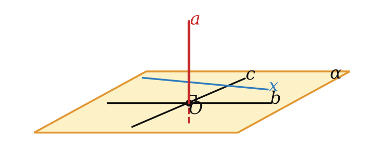
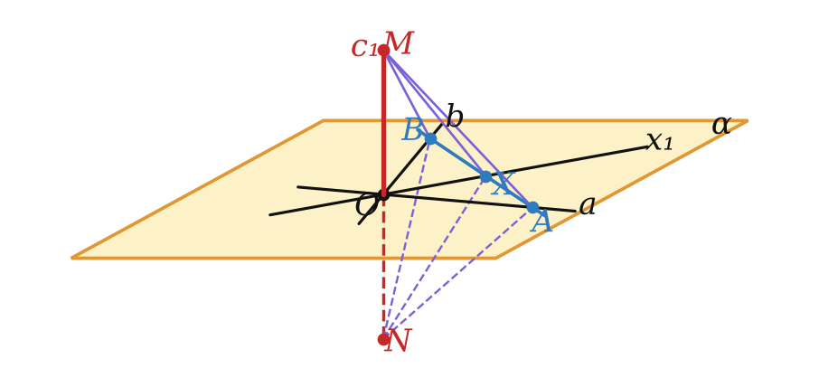
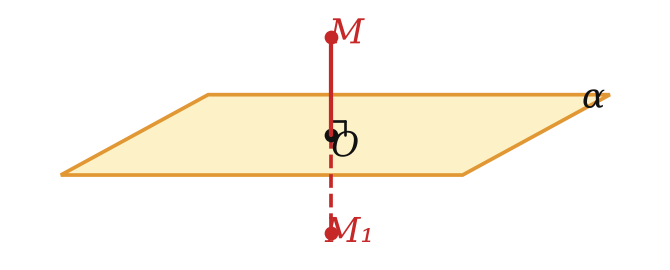
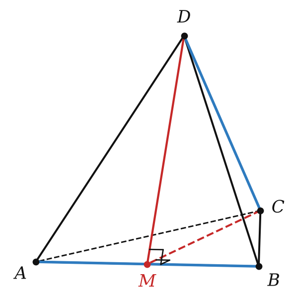
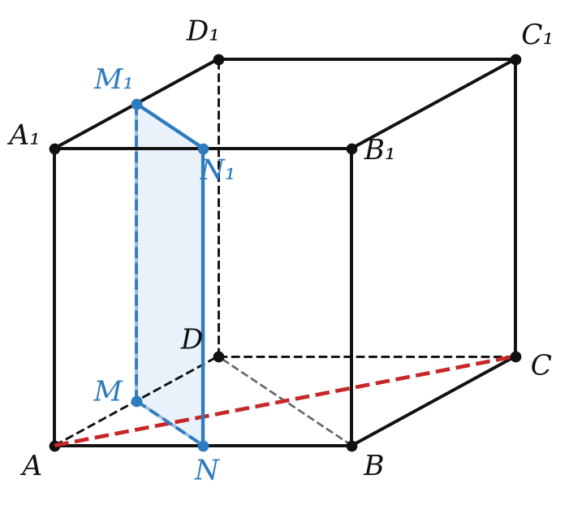

Теория
Что значит «прямая перпендикулярна плоскости»
Флагшток перпендикулярен земле, мачта — палубе, шуруп вкручивают перпендикулярно доске. Что общего? Прямая «стоит» так, что с любой линией, проведённой на поверхности, она образует прямой угол.
Прямую называют перпендикулярной плоскости, если она перпендикулярна любой прямой, лежащей в этой плоскости. Обозначение: a ⊥ α.

Такая прямая обязательно пересекает плоскость. Если бы она лежала в плоскости или была ей параллельна, то в плоскости нашлась бы параллельная ей прямая, а угол между параллельными прямыми равен 0°, а не 90°. Отрезок перпендикулярен плоскости, если он лежит на прямой, перпендикулярной плоскости.
Признак перпендикулярности прямой и плоскости
Проверять все прямые плоскости невозможно — их бесконечно много. Оказывается, хватит двух пересекающихся.
Если прямая перпендикулярна двум пересекающимся прямым, лежащим в плоскости, то она перпендикулярна самой плоскости.

Пусть c ⊥ a, c ⊥ b, прямые a, b лежат в α и пересекаются в точке O. Возьмём любую прямую x плоскости и докажем, что c ⊥ x. Если x ∥ a или x ∥ b, это следует из определения угла. Иначе проведём через O прямые c₁ ∥ c и x₁ ∥ x; достаточно доказать, что c₁ ⊥ x₁.
1) Проведём в α прямую, пересекающую b, x₁, a в точках B, X, A. На c₁ отложим OM = ON по разные стороны от α.
2) BO ⊥ MN и O — середина MN, значит, BM = BN (высота и медиана в треугольнике MBN). Так же AM = AN.
3) △BMA = △BNA по трём сторонам ⟹ ∠MBX = ∠NBX. Тогда △MBX = △NBX по двум сторонам и углу ⟹ XM = XN.
4) В равнобедренном треугольнике MXN медиана XO — высота: MN ⊥ XO, то есть c₁ ⊥ x₁. ∎
Пример: в прямоугольном параллелепипеде ребро AA₁ перпендикулярно рёбрам AB и AD (грани — прямоугольники), а они пересекаются. Значит, AA₁ ⊥ (ABC). Так же ставят новогоднюю ёлку: ствол перпендикулярен двум брусьям крестовины — и ёлка стоит вертикально.
Две прямые в плоскости должны пересекаться. Перпендикулярности к двум параллельным прямым мало: прямая может лежать в плоскости и быть перпендикулярной двум параллельным прямым этой плоскости.
Ещё четыре теоремы
Если одна из двух параллельных прямых перпендикулярна плоскости, то и другая прямая перпендикулярна этой плоскости.
Почему: для любой прямой x плоскости угол между a и x равен 90°, а параллельная прямая b образует с x тот же угол (определение угла через параллельный перенос).
Если две прямые перпендикулярны одной и той же плоскости, то они параллельны.
Пусть a ⊥ α, b ⊥ α, но a ∦ b. Через точку M ∈ b (вне α) проведём b₁ ∥ a; по теореме 10.2 b₁ ⊥ α. Прямые b и b₁ пересекают α в разных точках B и B₁, и обе перпендикулярны BB₁. В плоскости MBB₁ через точку M проходят два перпендикуляра к прямой BB₁ — противоречие. Значит, a ∥ b. ∎
Через данную точку можно провести прямую, перпендикулярную данной плоскости, и притом только одну.
Если две плоскости перпендикулярны одной и той же прямой, то они параллельны.
Идея доказательства 10.5: если бы плоскости пересекались по прямой c, возьмём точку A на c и плоскость через a и A. В ней через A прошли бы две разные прямые, перпендикулярные a, — так не бывает.
Симметрия относительно плоскости
Точки M и M₁ называют симметричными относительно плоскости α, если отрезок MM₁ перпендикулярен α и делится ею пополам. Каждая точка плоскости симметрична сама себе.

Это «зеркальная» симметрия: плоскость работает как зеркало. Она сохраняет расстояния (является движением), поэтому симметричные фигуры равны. Если фигура переходит сама в себя, плоскость называют её плоскостью симметрии. Плоскости симметрии есть у прямоугольного параллелепипеда, конуса, шара; в природе — у бабочки, в архитектуре — у фасадов многих зданий.
Разбор примеров

Все рёбра тетраэдра DABC равны. Докажите, что его противоположные рёбра AB и DC перпендикулярны.
1) Пусть M — середина AB. В равносторонних треугольниках ADB и ACB медианы DM и CM являются высотами: AB ⊥ DM, AB ⊥ CM.
2) DM и CM пересекаются, по признаку AB ⊥ (DMC).
3) Прямая DC лежит в плоскости DMC, поэтому AB ⊥ DC. ∎
Через центр O правильного треугольника ABC со стороной 6√3 проведена прямая DO ⊥ (ABC), DA = 10. Найдите DO.
OA — радиус описанной окружности: OA = 6√3/√3 = 6. DO ⊥ (ABC) ⟹ DO ⊥ OA, треугольник DOA прямоугольный: DO = √(100 − 36) = 8.

Ребро куба ABCDA₁B₁C₁D₁ равно 4, M — середина AD. Постройте сечение куба плоскостью, проходящей через M перпендикулярно прямой AC, и найдите его площадь.
1) Проведём MN ∥ BD (N — середина AB) и вертикальные отрезки MM₁ ∥ AA₁, NN₁ ∥ AA₁. Получим прямоугольник MNN₁M₁.
2) Почему он перпендикулярен AC: MN ∥ BD ⊥ AC (диагонали квадрата); MM₁ ∥ AA₁ ⊥ (ABC), значит, MM₁ ⊥ AC. Прямая AC перпендикулярна двум пересекающимся прямым плоскости сечения — признак 10.1.
3) MN = BD/2 = 2√2, MM₁ = 4. Площадь 8√2.
Чтобы доказать перпендикулярность прямой и плоскости, ищи в плоскости две пересекающиеся прямые, перпендикулярные данной. Чаще всего помогают: диагонали ромба (квадрата), медиана-высота равнобедренного треугольника и ребро, перпендикулярное грани.
Задачи урока
Реши в тетради, к каждой задаче — чертёж. Разберём на занятии.
Тест к уроку
Домашнее задание
Задачи Д1–Д6 ниже, к каждой — рисунок. Из учебника: № 10.4, 10.6, 10.12, 10.26. Выучить определение и признак 10.1 (доказательство — по рисунку), формулировки теорем 10.2–10.5.